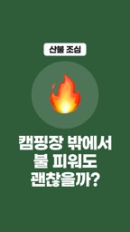

5번 영상
캠핑장 밖에서 불 피워도 괜찮을까?
쿠팡 링크는 아직 준비 중이에요. 아래 비교는 지금 바로 읽을 수 있어요.
불 피워도 되는 곳 3곳 비교
11월 1일부터 산불조심기간
12월 15일까지 · 2026년 가을
불은 등록 캠핑장에서
- 산 + 100m 안쪽
- ⚠ 불 피우면 안 돼요
- ⚠ 처음 걸려도 50만원
- 노지 · 공터 포함
- 등록된 캠핑장
- ✔ 정해진 자리에서 OK
- ⚠ 노지·공터는 안 돼요
- 국립공원
- ⚠ 정해진 곳 밖 요리 금지
- ⚠ 처음 걸리면 10만원
출처: 산림재난방지법(2026.2) · 자연공원법 시행령